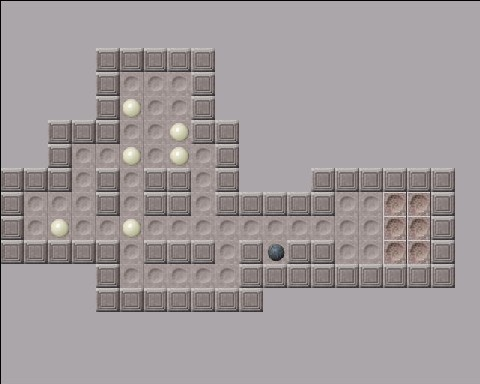
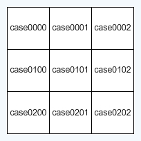

Vous connaissez un peu ActionScript, vous avez lu le tutoriel officiel qui proposait de réaliser un Mario Sokoban en C, et vous vous demandez comment faire un tel programme en Flash...
Vous êtes tombé au bon endroit ! ^^ Dans ce tutoriel, je vous propose de réaliser un jeu de Sokoban à l'aide de Flash et d'ActionScript. Vous apprendrez des fonctions avancées de Flash et prendrez au fur et à mesure des habitudes de programmation digne des professionnels !
Ce tutoriel s'adresse aux Zér0s connaissant un minimum les principes de programmation de base en ActionScript (ce ne sont donc plus vraiment des Zér0s :p ). Si vous ne connaissez pas du tout l'ActionScript mais que vous avez des notions en PHP ou en C, je vous propose de lire le début du tutoriel d'introduction à ActionScript afin de vous adapter à la syntaxe de ce langage qui est toutefois plus ou moins similaire. Quoi qu'il en soit, la lecture de ce tutoriel se révelera sans doute fructueuse, quel que soit le lecteur (du moins j'espère).
Les notions utilisées dans ce tutoriel seront les suivantes :
Déclaration et opérations sur les variables
Manipulations graphiques de clips sur la scène
Gestion des champs de texte dynamiques
Structures de contrôle (conditions, boucles, fonctions)
Importation de variables à partir de fichiers .txt
Syntaxe pointée, tableaux numérotés et indexés
Le jeu de Sokoban
Le jeu de Sokoban est un jeu de réflexion qui se joue seul. Le concept est que vous êtes un magasinier qui doit ranger des caisses dans les couloirs d'un entrepôt. Les couloirs ont des formes spécifiques à chaque niveau et il faudra réfléchir de quelle manière et dans quel ordre pousser chaque caisse pour arriver à les caser toutes dans les bons emplacements... Voici la version de Sokoban que nous allons réaliser ensemble :

Comme vous pouvez le constater, le magasinier et les caisses ont été ici réduits à leur plus simple expression. En effet, la plupart des version de Sokoban que l'on trouve sur le Web ont abandonné l'idée originale du magasinier et de ses caisses. J'ai décidé, pour ne pas me compliquer la vie, de respecter cette habitude... :-° Quoi qu'il en soit, je vous propose de tester ici la version de Sokoban que nous allons réaliser ensemble. Chouette ! :lol:
Le cahier des charges
Maintenant que vous connaissez le principe du jeu, nous allons nous fixer des objectifs pour sa création. Les différentes étapes seront les suivantes :
Création d'un premier tableau
Nous commencerons par créer un seul niveau. Le but du jeu est donc de mettre un certain nombre de boules dans les emplacements que nous aurons définis. Le jeu se jouera au clavier : les quatre touches directionnelles déplaceront le magasinier, que nous appellerons désormais poussoir. Mais lorsque le poussoir se trouve juste à côté d'une boule, le déplacement suivant provoquera un mouvement du poussoir et de la boule. Autre chose : le poussoir ne peut pousser qu'une boule à la fois. Il faudra donc empêcher celui-ci de se déplacer lorsqu'il se trouve face à deux ou trois boules... Enfin, quand la boule est placée dans l'emplacement destiné à cet effet, le joueur gagne un point. Lorsque le joueur a obtenu autant de points que le nombre de boules, il a gagné et le jeu est fini...
Enchaînement des niveaux
Après cette première partie, le plus gros du travail aura été réalisé. Mais nous devrons penser à créer plusieurs niveaux et un programme permettant de passer de l'un à l'autre. Il faudra pour cela modifier notre code en profondeur pour généraliser notre code à plusieurs tableaux. Vous pourrez ainsi ajouter autant de tableaux que vous le souhaitez.
Pour commencer, je vous propose de télécharger les images utilisées pour la création des tableaux (clic droit -> enregistrer sous) :
Le poussoir est contrôlé par le clavier et sert à pousser les boules.
Les boules sont poussées par le poussoir et doivent se rendre sur les emplacements.
Les couloirs sont les endroits où le poussoir et les boules peuvent se mouvoir.
Les murs délimitent la fin du tableau. Le poussoir et les boules s'y cognent.
Les cibles sont les emplacements destinés à recevoir les boules.
Le fond est l'arrière-plan qui se trouve au-delà des murs. Le poussoir ne peut y accéder.
Dans votre nouveau document Flash, commencez par importer ces six images dans la bibliothèque. Ensuite, créez une occurence de chacune d'elles que vous placerez sur la scène et que vous convertirez en symbole de clip. Donnez à chaque clip le nom de l'image qu'il contient (poussoir, boule, mur, fond, couloir, cible). Votre bibliothèque devrait contenir maintenant six images et six clips de même nom.
Sur la scène
Les cases vides
Un tableau de Sokoban fait au maximum 20*16 cases. Il existe des tableaux plus petits, mais les tableaux originaux de Sokoban ont une grandeur maximale de 20 cases en longueur et de 16 cases en hauteur. Libre à vous bien sûr d'agrandir le tableau par après si ça vous chante... ^^ Etant donné que chaque case fait 32*32 pixels, la taille de votre animation devra être de 640*512 pixels.
Maintenant que notre scène a les bonnes dimensions, nous allons placer les cases de notre tableau. Mais attention ! Nous n'allons pas nous contenter d'insérer les éléments de chaque case au bon endroit. En effet, imaginez que vous installiez chaque élément à sa place, un mur par-ci, une cible par-là. Si vous désirez alors changer la disposition des éléments, ou si vous voulez créer plusieurs niveaux, vous serez obligés de permuter les clips entre eux, ce qui vous prendrait bien trop de temps !
Pour éviter cela, au lieu de placer des clips sur chaque case, nous allons placer des cases "vides" sur la totalité de la scène. Ainsi, lorsque on dira à Flash de charger le niveau 1, il dira à telle ou telle case vide de devenir soit un mur, soit un couloir etc. Cette méthode, bien qu'elle puisse vous paraître repoussante de prime abord, est la méthode la plus orthodoxe et est d'ailleurs utilisée dans toutes les versions de Sokoban...
Bon, tout ça c'est bien, mais concrètement, qu'est ce que je dois faire pour avoir des cases "vides" ?
Pas de panique ! Nous allons tout simplement créer un nouveau clip qui contiendra juste un carré de la taille d'une case. Concrètement donc : dessinez un carré de 32*32 pixels sans remplissage, convertissez-le en clip et donnez-lui le nom de 'vide'. Placez une première occurrence de ce clip en dehors de la scène et appelez-la 'case0000'. Cette case servira de modèle à toutes les autres cases du tableau...
La grille du tableau
Nous devons maintenant copier cette première case de 'base' autant de fois que nécessaire pour remplir tout le tableau. Mais comme je doute que vous ayez envie d'y aller à coups de copier-coller, manuellement, je vous propose de créer toutes les cases vides avec ActionScript.
Je vais volontairement omettre de vous expliquer le code qui suit, pour la simple et bonne raison que ce code vous sera expliqué en long et en large dans la suite de cette partie... Pour l'instant, contentez-vous de le taper dans le panneau actions de la première image du scénario...
for(y = 0; y < 16; y++) {
if(y < 10) { y = "0" + y; }
for(x = 0; x < 20; x++) {
if(x < 10) { x = "0" + x; }
case0000.duplicateMovieClip("case" + y + x, this.getNextHighestDepth());
_root["case" + y + x]._x = 32 * Number(x);
_root["case" + y + x]._y = 32 * Number(y);
}
}
Ce code permet donc d'afficher une panoplie de cases vides prêtes à prendre l'aspect d'un des quatre états possibles (couloir, mur, cible, fond). Ce qu'il faut savoir, c'est que chaque case a un nom. En fait, le nom d'occurrence de chaque case est de la forme suivante : 'case' + sa position verticale en 2 chiffres + sa position horizontale en 2 chiffres. Ainsi, la première case s'appellera 'case0000' et la dernière 'case1519' (remarquez que l'on commence la numérotation à 0 et pas à 1). Voici le nom des premières cases de votre tableau :

Ainsi, lorsque Flash chargera un niveau, il demandera à chacune de ces cases de prendre un des quatre aspects disponibles. "Eh toi, là, la septième case de la neuvième colonne, pour ce niveau t'es un mur !" ^^
Dans le panneau Actions
Vous allez enfin commencer à programmer ! :) Ouvrez le panneau Actions sur l'image 1 du scénario principal. Nous allons expliquer à l'ordinateur l'aspect que doit prendre chaque case. Si vous voulez bien, le tableau que nous allons créer est le suivant :
Il va falloir à présent transformer ce tableau visuel en un tableau compréhensible pour l'ordinateur. Pour cela, nous allons créer un tableau au sens figuré du terme, c'est-à-dire un objet Array...
Mais... Mais... Pourquoi un objet Array ? o_O
Parce que, pour simuler un tableau visuel, il est logique d'utiliser un tableau virtuel ! Dans tous les jeux de plateaux qui comprennent des cases, vous devrez adopter cette technique. Donc, vous allez créer un tableau à deux dimensions, que vous appellerez 'level1'.
level1 = new Array();
Chaque index de ce tableau sera un tableau imbriqué qui représentera chaque fois une ligne du plateau. Et chaque index des tableaux imbriqués contiendra un chiffre qui représentera l'aspect que devra prendre une case. Les chiffres utilisés seront les suivants :
0 = fond
1 = couloir
2 = mur
3 = cible
Mais, comme un petit code source vaut mieux qu'un grand discours, voici le code : :lol:
Je réexplique pour ceux qui n'auraient pas compris (je ne vise personne :-° ). Donc, 'level1' est le nom de l'objet Array qui contient les informations sur tout le tableau. Chaque index de cet Array (il y en a 16) représente une ligne du tableau et est lui-même un Array. Simplement, au lieu d'avoir une valeur Number ou String dans notre Array, nous avons un valeur de type Array... Chaque ligne, donc, est un Array qui contient cette-fois 20 index (le nombre de colonnes). Et chaque index renferme une valeur cette-fois numérique. Le chiffre doit être compris entre 0 et 3, et chaque valeur représente un état...
Interprétation du Array
Nous avons encodé ce que j'appelle une base de donnée, c'est-à-dire que nous avons indiqué à Flash les informations dont il a besoin pour créer le tableau. Seulement, nous devons encore lui expliquer comment interpréter ces informations...
Pour cela, nous allons lui dire de parcourir chaque case du tableau. A chaque case, il regardera la valeur correspondante dans l'Array bidimensionnel et changera l'aspect du clip en fonction. Mais comment changer l'aspect du clip ? Vous allez devoir utiliser la fonction attachMovie() qui permet d'afficher un clip dans un autre clip...
Essayons donc cette fonction avec une seule case, pour commencer. Disons par exemple que nous voulons que la case0000 soit un mur... Le prototype de la fonction est le suivant :
Vous voyez que cette fonction nécessite un identifiant. Cela signifie que le clip destiné à être chargé doit avoir été exporté pour ActionScript. Pour cela, cliquez droit sur le clip dans la bibliothèque et dans le menu de liaison, cochez la case "Exporter pour ActionScript". Dans le champ identifiant, tapez "aspect" + le numéro de code que nous lui avons attribué (ici 2 pour mur). Répétez l'opération pour les autres clips. Vous aurez donc quatre identifiants nommés respectivement aspect0, aspect1, aspect2, aspect3.
Maintenant que nous avons un identifiant, examinons les autres paramètres... La profondeur sert à indiquer si le clip devra passer au-dessus ou en-dessous de certains éléments. Dans notre cas, on notera 0 pour qu'il soit au-dessus de tout. Quant au nouveau nom, il ne nous intéresse pas dans notre cas. Nous écrivons donc la propriété _name qui renvoie le nom actuel du clip... En bref, votre code est le suivant :
case0000.attachMovie("aspect2", this._name, 0);
Essayez, ça marche ! :) Bien, maintenant, plutôt que de souffler à l'ordinateur que c'est un mur, nous allons lui dire d'aller voir dans la base de donnée. Pour cela, il faut lui dire de chercher le numéro dans le tableau au bon endroit, et d'accueillir le clip qui porte ce numéro :
Maintenant, nous n'avons plus qu'à copier ce code pour toutes les cases ! Mais cette opération ne sera pas aussi facile qu'elle n'en a l'air. En effet, à première vue, il faudrait utiliser une boucle. Ou plutôt deux ! En effet, les cases ont chacune deux coordonnées : une pour la ligne et une pour la colonne. Essayez de comprendre ce code à boucles imbriquées :
for(y = 0; y < 16; y++) {
for(x = 0; x < 20; x++) {
_root["case" + y + x].attachMovie("aspect" + level1[y][x], this._name, 0);
}
}
On pourrait considérer x et y, variables d'itérations, comme les coordonnées du 'pointeur' virtuel. Lorsque x vaut 13 et que y vaut 9, le programme s'est déjà occupé des treize premières lignes et est occupé à traiter la dixième case de la quatorzième ligne... L'instruction du milieu, traduite en français, donne : "Prends l'aspect avec le numéro que t'as trouvé dans le tableau, et charge-le dans la case où le pointeur se trouve." - en très simplifié :D .
Bon, assez parlé, maintenant testons ce code !
Mais il marche même pas ce code il affiche qu'une partie des cases, comment ça se fait ? o_O
Effectivement... Le gros problème est que nos cases sont numérotées en deux positions, alors que les variables d'itérations sont stockées sous forme de nombre. Or, pour Flash, un nombre c'est par exemple 7 et pas 07. Donc, lorsqu'on lui dit de chercher l'index qui porte le numéro de la case, il cherchera un index 07 et il ne trouvera pas. Donc il va rien charger du tout... C'est bête, quand on y pense, un pc ! :p
Blague à part, il faudrait trouver une solution... La seule envisageble est d'ajouter un "0" à la variable d'itération si elle est inférieure à dix... Voilà ce que ça donne en code :
C'est quoi ce truc de fou ? Et d'où il vient ce Number ? :o
Je crois qu'une petite explication s'impose ! ^^ J'ai ajouté deux conditions. Une pour la boucle des lignes et une pour la boucle des colonnes. La condition dit que, avant d'effectuer quoi que ce soit, on examine la variable d'itération (x ou y). Si elle est plus petite que 10, on va avoir des problèmes pour la suite. Donc, on s'empresse d'ajouter un "0" devant. Mais le problème c'est qu'alors la variable d'itération n'est plus un nombre. C'est devenu un String ! Donc, pour aller chercher dans le tableau, on le convertit en nombre juste le temps de trouver la bonne case. Ensuite, avant de recommencer la boucle, on doit le convertir en nombre définitivement cette fois, pour que l'opération d'incrémentation n'essaie pas bêtement d'incrémenter un string...
Et voilà ! Essayez donc, ça marche parfaitement. Vous n'avez qu'à vous amuser à changer les chiffres dans le Array pour vérifier ! ^^
(En fait, le code permettant de créer les cases vides et que je ne vous ai pas expliqué dans un premier temps, avait cette même structure complexe. C'est pour ça que j'ai volontairement passé l'explication sous silence.)
Placement des boules
Il nous reste une dernière chose à ajouter. En effet, notre système de base de données renseigne Flash sur le dessin du niveau mais pas sur l'emplacement des boules ni du poussoir. Pour cela, commencez par insérez une occurrence du clip poussoir, n'importe où sur la scène. Nommez-la tout simplement poussoir et insérez le code suivant :
En fait, nous avons créé un tableau qui renseigne, en premier index, la position horizontale, et en deuxième index, la position verticale... Nous avons ajouté un "1" après le poussoir pour spécifier qu'il s'agit du poussoir du premier niveau (restons toujours dans l'optique qu'il y aura plusieurs niveaux). Pour l'interprétation, il nous faut tout simplement dire de déplacer le poussoir en fonction des valeurs présentes dans cet Array. Mais notre unité de mesure est en 'cases' alors que celle de Flash est en pixels. Qu'à cela ne tienne, la conversion se fait simplement en multipliant les cases par 32 (la taille en pixels d'une case).
En ce qui concerne la deuxième ligne, elle sert a renseigner la 'profondeur' du clip poussoir. En effet, si on ne fait pas cela, le poussoir risque de se retrouver en-dessous du clip couloir et on ne le verrait pas parce qu'il serait caché. Il faut donc, par sécurité, spécifier que le clip doit se trouver "tout au-dessus". Pour cela, on utilise la fonction swapDepths() qui permet de placer un clip à une certaine profondeur. Mais comme on ne connaît pas la profondeur du clip, on va utiliser une méthode qui renvoie la profondeur la "moins profonde" de l'animation. Cette propriété, c'est getNextHighestDepth(). Oui je sais, vous pouviez pas deviner ^^
Voilà pour le poussoir ! Pour les boules, c'est plus compliqué parce qu'il y en a plusieurs... Commencez par insérer une occurrence du clip boule et placez-la n'importe où sur la scène. Nommez-la boule1. Comme nous ne savons pas dès le départ le nombre de boules que comportera notre niveau, on n'en crée qu'une seule pour l'instant et on la nomme tout simplement boule.
Pour la base de données, nous allons procéder de même façon que pour le poussoir. Chaque boule sera un Array à deux index. Mais comme il y en a plusieurs, nous ajouterons un Array principal qui comprendra la liste des boules.
boules1 = [[5,4],[5,6],[7,5],[7,6],[2,9],[5,9]];
L'Array boules1 est la liste des boules contenues dans le premier niveau, et chaque index est lui-même un Array. J'ai juste utilisé une syntaxe un peu moins claire mais beaucoup plus courte.
Pour l'interprétation, c'est un rien plus complexe. Il faudra d'abord demander à Flash de copier la boule autant de fois que nécessaire, puis de placer chaque boule à sa place. Pour savoir combien de fois il faut copier la boule, il suffit de demander la longueur du Array boules1. Et pour copier la boule, on utilise une méthode particulière dont voici le prototype :
Les boules doivent apparaître au-dessus de tout le reste, y compris des cases. En ActionScript, il existe une instruction pour dire cela : getNextHighestDepth. Quant au nouveau nom, ce sera chaque fois boule + le numéro de la boule.
for(i = 0; i < boules1.length; i++) {
boule.duplicateMovieClip("boule" + i, this.getNextHighestDepth());
}
Pour l'instant, nous avons six occurrences du clip boule mais elles se trouvent toutes au même endroit. Pour les amener à leurs places respectives, on ajoute ceci dans la boucle :
Nous allons maintenant nous occuper du déplacement du poussoir dans le tableau. Ce sont les touches directionnelles qui commandent le déplacement. Nous allons donc utiliser la classe Key qui gère les événements claviers. Nous allons ajouter un écouteur qui se chargera de 'surveiller' le clavier. Lorsqu'on appuiera sur une touche, il préviendra l'ordinateur qui vérifiera alors quelle touche a été enfoncée. Si c'est la touche gauche, le poussoir se déplacera à gauche ; si c'est la touche droite, il se déplacera à droite, et ainsi de suite...
ecouteur = new Object();
ecouteur.onKeyDown = function () {
bougerpoussoir(Key.getCode());
}
Key.addListener(ecouteur);
En résumé, ce code appelle la fonction bougerpoussoir et lui passe comme paramètre le code de la touche enfoncée. Bien sûr, cette fonction bougerpoussoir n'existe pas : nous allons la créer maintenant. :)
Si on considère les coordonnées d'une case comme (x,y), on peut représenter les déplacements case par case du poussoir selon le schéma suivant :
Droite --> (x,y) devient (x+1,y)
Gauche --> (x,y) devient (x-1,y)
Bas --> (x,y) devient (x,y+1)
Haut --> (x,y) devient (x,y-1)
Cela signifie par exemple que, lorsque l'on veut déplacer le poussoir vers la droite, on doit incrémenter la position horizontale de 1. Si par contre on veut le déplacer vers le haut, on doit diminuer la position verticale de 1. Nous allons mettre tout cela en code, tout en gardant à l'esprit qu'une case mesure 32 pixels :
function bougerpoussoir(codetouche:Number) {
switch(codetouche) {
case Key.RIGHT:
poussoir._x += 32; break;
case Key.LEFT:
poussoir._x -= 32; break;
case Key.DOWN:
poussoir._y += 32; break;
case Key.UP:
poussoir._y -= 32; break;
}
}
Cette fonction est facile à comprendre. Flash analyse le paramètre direction passé par l'appel de la fonction et déplace le poussoir en fonction. Essayez ce code : le poussoir se déplace partout, même à travers les murs. C'est tout à fait normal puisque nous n'avons pas encore fait la gestion des collisions...
Mais tant qu'on y est, programmons une fonction pour le déplacement des boules. Même si on ne l'appellera pas dans un premier temps, autant la définir en même temps.
function bougerboule(codetouche:Number, noboule:Number) {
switch(codetouche) {
case Key.RIGHT:
_root["boule" + noboule]._x += 32; break;
case Key.LEFT:
_root["boule" + noboule]._x -= 32; break;
case Key.DOWN:
_root["boule" + noboule]._y += 32; break;
case Key.UP:
_root["boule" + noboule]._y -= 32; break;
}
}
Pour le déplacement des boules, on doit juste faire passer un paramètre de plus pour que Flash sache quelle boule déplacer... Pour le reste, c'est le même principe que la fonction bougerpoussoir.
Anticipation des cases
Le mouvement du poussoir ne devra s'effectuer que dans des conditions très précises. L'énumération de ces conditions s'appelle la synthèse des collisions. Si on réalise cette synthèse mentalement, on se rend compte que, lorsqu'on veut déplacer le poussoir, deux éléments sont importants : l'aspect des deux cases qui suivent directement le poussoir, et la présence ou non d'une boule sur chacune de ces cases.
Nous allons donc créer des variables qui rendent compte de ces éléments. Pour cela, commencez par les définir avant la fonction onKeyDown :
suivante = new Object();
postsuiv = new Object();
L'objet suivante renseignera sur la case suivante tandis que l'objet postsuiv renseignera sur la case d'après. Ces objets auront chacun quatre propriétés : posx, posy, aspect et boule.
A chaque fois que le poussoir se déplacera, il faudra changer les valeurs de ces propriétés. Nous allons donc modifier notre fonction onKeyDown. Les deux premières propriétés, qui renseignent la position de la case, sont trouvées en ajoutant ou en soustrayant 1 ou 2 à la position horizontale ou verticale du poussoir :
Ce code n'a rien changé de visible dans notre jeu, mais grâce à lui, l'ordinateur peut maintenant connaître à tout moment les coordonnées des deux cases suivantes... C'est déjà bien, mais il faut qu'il soit également renseigné sur l'aspect de ces deux cases. Pour cela, on doit aller chercher dans l'Array principal l'aspect qui correspond aux deux positions que nous venons de définir. Ajoutez donc le code suivant à la suite du reste :
Flash connaît à présent l'aspect et la position des cases qui se trouvent face à notre poussoir. Nous pouvons maintenant définir la dernière propriété de ces cases : la présence ou non d'une boule... Pour cela, nous devons utiliser une boucle qui vérifiera, pour chaque boule, si oui ou non sa position est la même que celle de la case :
Commentons ce code. La première partie se charge de déterminer la position X et Y des deux cases suivantes. Seulement, pour savoir de quelle case 'suivante' on parle, il faut connaître la direction désirée. C'est pour ça qu'il y a une condition... Quant à la deuxième partie, elle renseigne sur l'aspect de ces deux cases en fouillant l'Array principal. La troisième partie, elle, passe toutes les boules en revue et vérifie chaque fois si cette boule se trouve ou non sur la case. Si oui, la propriété boule prend le numéro de cette boule. Si non, la propriété prend la valeur undefined.
Bon, tout ça c'est bien, mais je comprends pas à quoi elles peuvent bien servir toutes ces variables ? Comment vont-elles nous aider à gérer les collisions ? o_O
C'est vrai qu'on pourrait s'interroger sur l'utilité de ces paramètres. Mais vous comprendrez mieux à quel point c'est important lorsque nous nous attaquerons aux tests de collisions. Au moins, maintenant, lorsque l'utilisateur désire se déplacer, Flash maîtrise la situation. Il connaît les élément qui risquent d'intervenir dans le mouvement.
Mais ne vous inquiétez pas, nous allons mettre tout ça en pratique avec les tests de collisions. :)
Gestion des collisions
Maintenant que l'ordinateur connaît bien la situation, nous allons pouvoir attaquer les tests de collisions. Tout d'abord, faisons ensemble la synthèse exhaustive des conditions :
Si la case suivante est un mur ou le fond --> Le poussoir reste immobile.
Si la case suivante est une cible ou un couloir exempt de boule --> Le poussoir se déplace.
Si la case suivante est une cible ou un couloir occupé par une boule :
Si la case post-suivante est un mur ou le fond --> Le poussoir et la boule restent immobiles
Si la case post-suivante est une cible ou un couloir exempt de boule --> Le poussoir et la boule se déplacent.
Si la case post-suivante est une cible ou un couloir occupé par une boule --> Le poussoir et les deux boules restent immobiles.
Maintenant, grâce aux objets suivante et postsuiv que l'on a déterminés, il est facile de rédiger le code qui régit le déplacement du poussoir et des boules :
Ca paraît compliqué, mais quand on y regarde de plus près, on s'aperçoit vite que c'est juste la pure traduction de la synthèse des collisions faite plus haut ! Un petit peu d'habitude avec les if/else suffit à s'y retrouver... ;)
Plus qu'à tester le code... Normalement, si votre code est en tout point identique au mien, cela devrait fonctionner parfaitement ! Mais n'hésitez pas à tester toutes les possibilités : essayez de pousser deux boules en même temps ou de pousser une boule contre un mur etc.
La gestion des déplacements est maintenant terminée. Si le code reste encore trouble dans votre esprit, relisez-le en détachant chaque instruction et vous verrez que cela vous paraîtra plus clair... Quoi qu'il en soit, notre premier tableau est presque fini. Il nous reste encore deux étapes. La première est nécessaire, c'est le comptage des points lorsqu'on pousse une boule sur une cible. La deuxième est facultative, c'est la possibilité de revenir plusieurs coups en arrière si l'on s'est trompé...
Une dernière étape avant d'avoir terminé ce premier tableau est d'ajouter une fonctionnalité de comptage des points. On pourrait à la limite s'en passer car l'utilisateur est censé savoir quand il a terminé le niveau, mais si on reste dans l'optique d'une aventure de plusieurs niveaux, il faudra que le jeu passe au prochain niveau dès que toutes les boules sont dans les cibles. Il faut donc, à chaque déplacement du poussoir, compter le nombre de boules dans les cibles...
Nous allons donc ajouter à la fonction onKeyDown un appel vers la fonction de comptage des points que nous allons créer. Cet appel doit impérativement se trouver à la fin de onKeyDown parce qu'il est important que les instructions soient exécutées avant la fonction :
comptage();
Nous allons maintenant créer la fonction comptage. Placez cette fonction après les fonctions bougerpoussoir et bougerboule. Cette fonction devra d'abord parcourir toutes les cases et vérifier si l'état de cette case est une cible. Si c'est le cas, elle devra alors parcourir toutes les boules et vérifier si telle ou telle boule se trouve sur cette case. Si c'est le cas, alors on incrémente la variable points. Allons-y pas à pas ! Pour commencer, codons la boucle qui parcourera toutes les cases :
function comptage() {
points = 0;
for(y = 0; y < 16; y++) {
if(y < 10) { y = "0" + y; }
for(x = 0; x < 20; x++) {
if(x < 10) { x = "0" + x; }
//instructions
}
}
}
J'ai commencé par initialiser la variable points, puis j'ai tout simplement recopié la boucle que nous avons utilisé lors de la mise en place du tableau. Vous vous souvenez, le truc avec les Number et les "0" ? :D Maintenant, pour chaque case qu'elle parcourt, il faut demander à notre fonction si c'est une cible :
Maintenant, la fonction lit la ligne instructions seulement quand il tombe sur une case de type cible. Nous devons alors lui dire de parcourir toutes les boules et d'incrémenter la variable points chaque fois qu'une boule se trouve sur une cible :
Et voilà. Vous n'avez plus qu'à tester l'animation ! Elle devrait fonctionner sans problème, pour autant que vous ayez placé la fonction comptage au bon endroit de telle sorte qu'elle soit déclarée avant d'être appelée...
Mais avant de pouvoir dire que vous avez vraiment terminé votre premier tableau, vous devez encore ajouter une petite fonctionnalité à votre jeu : un bouton permettant de revenir un ou plusieurs coups en arrière.
Nous allons maintenant programmer une fonction permettant de revenir plusieurs coups en arrière. Ce sera aussi l'occasion de commencer à soigner l'interface du jeu. Je vous conseille de déjà écrire un titre à votre jeu, de mettre un peu de couleurs, etc. Je vous fais confiance pour ça... ;)
Création d'un historique
La première étape nécessaire à une fonction Undo est de retenir tous les coups joués depuis le début de la partie. Le plus simple pour coder cela est d'utiliser un Array où chaque index représenterait un coup. On pourrait associer une lettre à chaque coup possible :
"g" pour un déplacement vers la gauche
"d" pour un déplacement vers la droite
"h" pour un déplacement vers le haut
"b" pour un déplacement vers le bas
Ainsi, à chaque déplacement du poussoir, on ajouterait un index au Array. Mais il faut aussi que Flash soit renseigné sur les mouvements des boules opérés par le poussoir. On va donc, dans le cas d'un déplacement de boule, ajouter à la lettre le numéro de la boule : par exemple, lorsqu'on pousse la boule n° 3 vers le bas, on ajoute la valeur "d3"...
Pour la mise en code, il faut commencer par initialiser l'objet Array que nous appellerons historique. Placez cette instruction après la déclaration des objets ecouteur, suivante et postsuiv.
historique = new Array();
Ca, c'est facile ! :) Maintenant, on doit placer le code qui permet d'ajouter un index à cet Array à chaque déplacement. Commencons par le déplacement simple (sans poussage de boule). Le code est à placer dans la fonction bougerpoussoir
function bougerpoussoir(codetouche:Number) {
switch(codetouche) {
case Key.RIGHT:
poussoir._x += 32; historique.push("d"); break;
case Key.LEFT:
poussoir._x -= 32; historique.push("g"); break;
case Key.DOWN:
poussoir._y += 32; historique.push("b"); break;
case Key.UP:
poussoir._y -= 32; historique.push("h"); break;
}
}
J'ai utilisé la fonction push qui permet tout simplement d'ajouter un index à un objet Array. Pour le déplacement avec boule, c'est la même chose mais le code est à placer dans la fonction bougerboule.
Maintenant, sans que nous le sachions, l'ordinateur retient tous les coups que nous jouons dans une liste des coups.
Le bouton Undo
Il faut maintenant programmer la fonction qui se déclenche lorsque le joueur appuie sur le bouton Undo. Pour commencer, créez un bouton (un rectangle gris et un texte, par exemple) que vous convertirez en symbole de clip. Donnez-lui simplement undo comme nom d'occurrence.
Pour le code, il faudra dire à Flash d'effectuer le mouvement inverse de celui désigné par la lettre g,d,b ou h. Commençons par le mouvement simple :
La première ligne sert à savoir si le mouvement à inverser est un mouvement simple ou une poussée de boule. La fonction cherche le dernier index de l'historique, et examine sa longueur. Si elle vaut 1 (g, d, b, h), c'est que c'est un déplacement simple. Si elle vaut 2 (g2, d3, h5, b0), c'est que c'est un poussage de boule.
Ici donc, l'instruction if vérifie si c'est un mouvement simple. Si c'en est un, alors on déplace le poussoir dans la direction inverse de celle désignée par la lettre trouvée. Mais lorsqu'on revient un coup en arrière, il faut effacer ce coup de l'historique. C'est pourquoi j'ai ajouté l'instruction pop qui permet d'effacer le dernier index d'un Array.
Ajoutons maintenant le code pour un poussage de boule :
La deuxième partie du code est lue uniquement si on a affaire à un déplacement avec poussage de boule. Dans ce cas, on doit bouger le poussoir mais également la boule dont le numéro se trouve dans l'historique. J'ai également ajouté une deuxième instruction pop car on doit effacer de l'historique deux déplacements : celui du poussoir et celui de la boule.
Et voilà, la création de notre premier tableau Sokoban est enfin terminée. :)
Nous allons maintenant nous attaquer à la dernière phase de création de notre Sokoban, à savoir la création de d'une aventure de plusieurs tableaux et la possibilité d'en ajouter.
Duplication de la base de données
Rappelez-vous : la base de données comprenant les informations de notre premier tableau est constituée des éléments suivants :
Un tableau level1 pour l'aspect des cases (tableau bidimensionnel)
Un tableau boules1 pour la position des boules (tableau bidimensionnel)
Un tableau poussoir1 pour la position du poussoir
Pour créer trois tableaux différents, il faut commencer par copier la base de données dix fois en modifiant juste les noms des Array (level2, boules2 ,poussoir2). A partir de là, on change l'aspect des cases, la position du poussoir et celle des boules dans chacun de ces Array.
Les trois tableaux que je vais vous proposer sont les plus classiques, présents dans la plupart des jeux de Sokoban en ligne. Bien sûr, il est aussi amusant d'en créer soi-même, vous pourrez donc par la suite ajouter d'autres niveaux en plus des trois premiers...
Vous pouvez donc ajouter le code suivant à la suite de la base de donnée du premier tableau :
A présent, ActionScript a toutes les informations nécessaires à la mise en place des trois tableaux de notre Sokoban. Le travail de base de données est donc terminé. Mais nous devons maintenant changer l'interprétation de cette base de données, puisque elle ne gère pour l'instant qu'un seul niveau.
Interprétation de la base de données
Rappelez-vous du code que nous avons utilisé pour interpréter la base de donnée du premier tableau :
Réflechissez un petit peu. Ce code est limité à un seul tableau, et il faut le généraliser pour tous les tableaux. En imaginant que l'on aie une variable noniveau qui représente le numéro du tableau en cours, on pourrait remplacer :
level1 par _root["level" + noniveau]
boules1 par _root["boules" + noniveau]
poussoir1 par _root["poussoir" + noniveau]
C'est exactement ce que nous allons faire. Remplacez le code d'interprétation par le code suivant, et observez les modifications qui ont été apportées :
Et voilà ! En effectuant simplement le remplacement d'un terme par un autre, on a généralisé le code d'interprétation pour n'importe quel niveau. Pour tester ce code, initialisez la variable du numéro du tableau :
noniveau = 2;
Placez cette instruction à la toute première ligne de votre code puis lancez l'animation. Vous verrez alors apparaître sous vos yeux un nouveau tableau de Sokoban ! Testez aussi la valeur 3 pour essayer encore un autre tableau !
Généralisation des déplacements
Bien sûr, tout n'est pas encore parfait ! Vous pouvez visualiser les nouveaux tableaux, mais pas encore vous déplacer dedans. Pour cela, il faudra faire la même opération que précédemment, mais pour la section "gestion des déplacements" de notre code. Il suffit de remplacer le 1 par le numéro du tableau en cours.
Les fonctions bougerboule et bougerpoussoir ne demandent à aucun moment le numéro du niveau. On ne les modifiera donc pas. Pour ce qui concerne le bouton Undo, c'est pareil : on n'y touchera pas. Par contre, la fonction onKeyDown qui gère les déplacements a besoin du numéro du tableau lorsqu'elle cherche l'aspect des cases suivantes et post-suivantes. Voici donc la partie modifiée de cette fonction onKeyDown :
Testez à présent le code. Le joueur peut se déplacer dans le tableau et pousser des boules. Cependant, le comptage des points ne marche pas... C'est normal, car la fonction comptage fait elle aussi appel au numéro du tableau. La voici donc modifiée :
Voilà ! Tous les remplacements ayant été faits, notre programme est maintenant capable de gérer plusieurs tableaux.
Passage d'un niveau à un autre
Nous allons maintenant coder la dernière partie du code qui permet de passer au tableau suivant lorsque le premier est terminé. En pratique, il faudra effectuer la section "interprétation" de notre code à chaque fois que l'on change de niveau. Et pour cela, on est obligés de transformer cette partie du code en une fonction.
Pour cela, il faut d'abord initialiser la fonction, qu'on appellera interpretation. Et nous allons déplacer une série d'éléments de notre code dans notre fonction. En fait, tout les instructions 'libre' - extérieurs à une fonction - vont être placées dans la fonction interpretation qui sera appelée à chaque changement de tableau et qui servira à remettre à zéro toutes les variables. Cela donne donc :
Après la définition de la fonction, on l'appelle une première fois pour la mise en place du premier tableau. La fonction est définie, il ne reste plus qu'à l'appeler ! Cet appel devra se faire uniquement lorsque l'utilisateur place la dernière boule sur une cible. On va donc ajouter une condition qui surveillera la variable points et qui examinera sa valeur chaque fois que celle-ci change. Elle lorsque le nombre de points est égal au nombre de boules, on passe au tableau suivant en appelant la fonction après avoir incrémenté la variable noniveau. Cet appel se fait dans la fonction comptage :
Voilà ! A la fin de cette opération, votre code n'est plus constitué que de fonctions - hormis la base de données. Toute les fonctionnalités du jeu sont sous forme de fonctions qui s'appellent les unes les autres. La seule instruction libre restante est bien sûr le premier appel de la fonction interpretation.
Si vous n'avez pas très bien compris ce qu'il fallait mettre dans la fonction interpretation, voici un petit résumé des bouts de codes qui se sont glissés à l'intérieur de la fonction :
Toute la partie que j'appelle "interprétation du code" et que nous avons codé dans la section "Mise en place du tableau".
L'initialisation du Array historique, pour que l'ordinateur ne retiennent pas les coups des niveaux précédents.
L'initialisation des Objects suivante et postsuiv, également pour que l'ordinateur oublie tout du niveau précédent.
J'ai le plaisir de vous annoncer que vous avez terminé votre jeu de Sokoban ! Le code, exempt de tout commentaire et passage de ligne, fait exactement 217 lignes et 6487 caractères, espaces non compris. Ca paraît peu mais cela représente beaucoup de travail, comme vous avez pu le constater. Je vous propose de télécharger le fichier source au format .fla ici :
Idées d'améliorations
Cependant, le programme est loin d'être parfait, bien que déjà assez complet. Je vous propose quelques idées d'améliorations qui m'ont traversé l'esprit ou que j'ai moi-même ajouté à mon programme sans pour autant leur consacrer un tutoriel. Parmi celles-ci, je cite :
Vous pourriez, plutôt que de les taper directement sous Flash, charger vos tableaux à partir d'un fichier externe à l'extension ".sok". Ainsi, vous ne devriez pas ouvrir Flash pour faire une modification, et vous pourriez ajouter des nouveaux tableaux très facilement.
Un gros travail serait de créer un éditeur de tableaux qui permettrait d'enregistrer vos créations au format ".sok" pour les essayer ensuite dans le jeu. Cela demande un peu d'astuce mais surtout une bonne connaissance de la gestion des données externes, c'est pourquoi je ne me suis pas attardé là-dessus dans ce tutoriel.
Plus facile à réaliser : un petit compteur qui affiche le nombre de coups joués par l'utilisateur. On pourrait alors enregistrer ce nombre de coups dans un fichier et proposer à l'utilisateur d'essayer de battre son record !
Un peu plus complexe : comme on a utilisé un historique qui retient tous les coups, se serait dommage de ne pas l'utiliser à 100% ! Pourquoi ne pas proposer de sauvegarder, en même temps que le nombre de coups, la solution complète à laquelle le joueur est arrivé ? Il pourrait alors observer ses anciennes parties dans une visionneuse et les comparer pour essayer de mieux jouer !
Merci d'avoir lu ce tutoriel jusqu'au bout ! J'espère avoir été assez clair et vous avoir appris des notions de programmation en ActionScript... :) N'hésitez pas à laissez des commentaires et à bientôt, amis Zér0s !